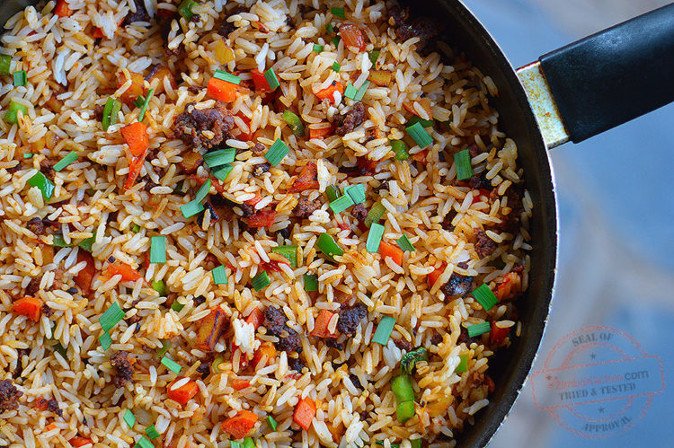

Fried Rice

Fried Rice with Mince & Veggie Mix
Description
Rice need to be thoroughly cooked, boiling is essential. 4-5 Servings ~ 30 minutes
Ingredients
- 4 cups cooked rice
- 300 g steak mince
- 1/2 onion, chopped
- 1/2 green pepper, chopped
- 2 medium carrots, chopped
- 1 medium potato, chopped
- 1/2 medium tomato, chopped
- 1/2 tsp salt
- 1 tbsp tomato paste
- 1/2 tsp curry powder
- 3 tbsp oil
- Get your ingredients together. Heat oil in pan. Add . Fry until browned.
- Add onion and curry powder. Fry for 2 minutes. Add and tomato paste. Allow cooking for 3 minutes.
- Add carrots and peppers. Fry for 3 minutes then add the . Mix until all ingredients are evenly incorporated. Taste for seasoning and adjust accordingly. Enjoy!